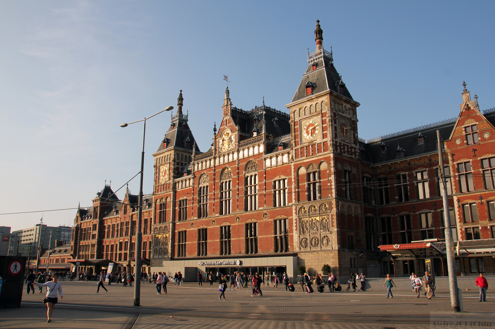
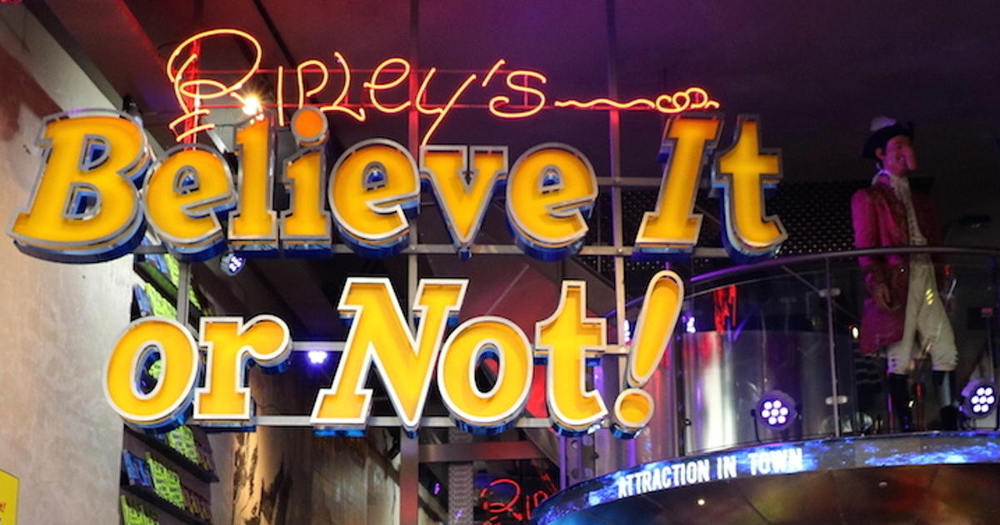

 Station Amsterdam Centraal is het centraal station van de Nederlandse hoofdstad Amsterdam. Het is gebouwd tussen 1881 en 1889 naar ontwerp van P.J.H. Cuypers, A.L. van Gendt (stationsgebouw) en L.J. Eijmer (stationskap). Het station telt zes perrons die via drie dwarsgangen onder de 15 sporen (waarvan 11 perronsporen) bereikbaar zijn. Dagelijks telt Amsterdam Centraal circa 160.000 in- en uitstappers, waarmee het na station Utrecht Centraal het drukste station van Nederland is. Reizigers kunnen gebruikmaken van treinen, metro's, trams, bussen en veren. Het station is gelegen op het in het IJ aangeplempte Stationseiland.
 Betreed de wereld van het Ongelooflijke en het Bizarre bij Ripley's Believe it or Not Amsterdam. Dit Amsterdamse museum, dat tegelijkertijd eigenlijk ook een attractie is, toont 's werelds meest opmerkelijke verzameling van natuurlijke, wetenschappelijke, artistieke en menselijke eigenaardigheden. Net als een tijdcapsule, combineert het imposante gebouw van Ripley's Believe it or Not Amsterdam oude beschavingen en hedendaagse kunst in een poging deze schatten te bewaren voor toekomstige generaties. Mensen zeggen dat het een van de raarste plekjes in de stad is, maar ook een must-see in Amsterdam als je geïnteresseerd bent in rare feitjes.